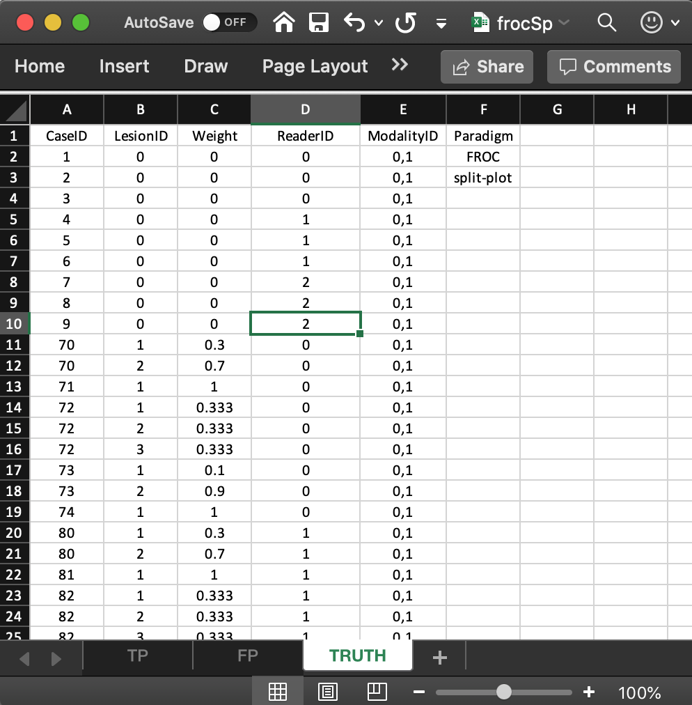
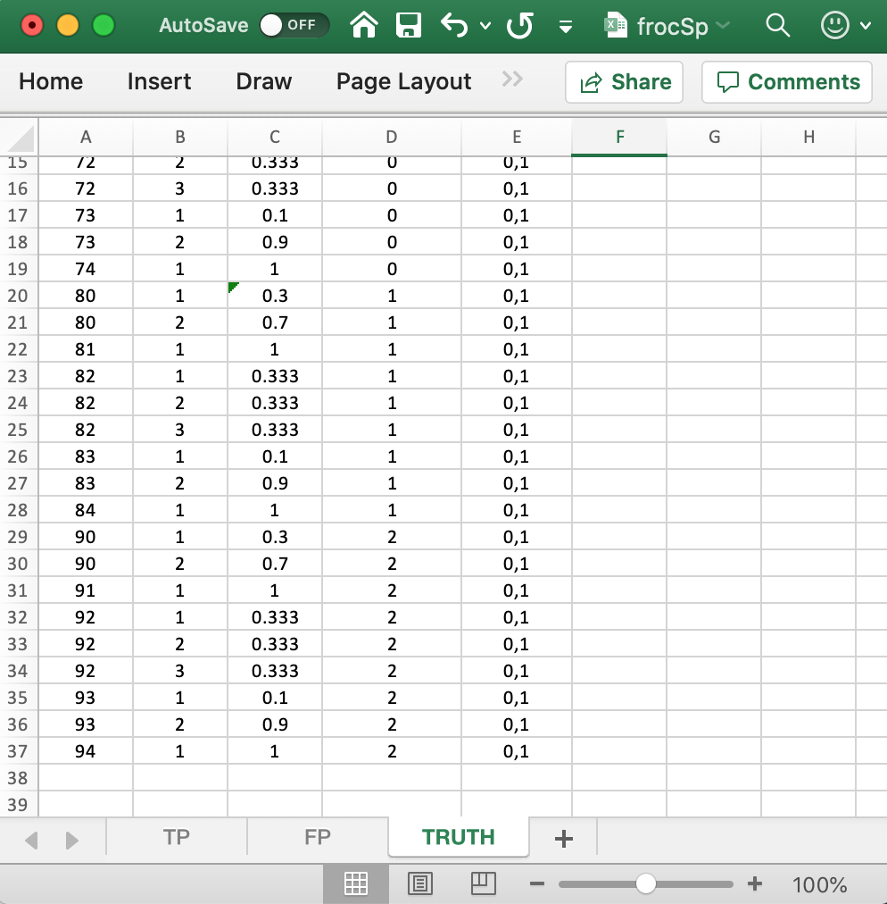
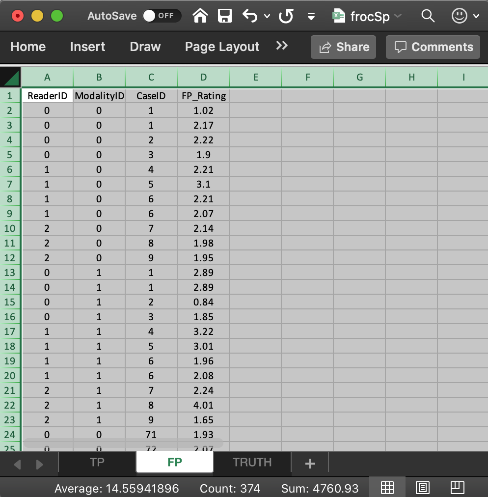
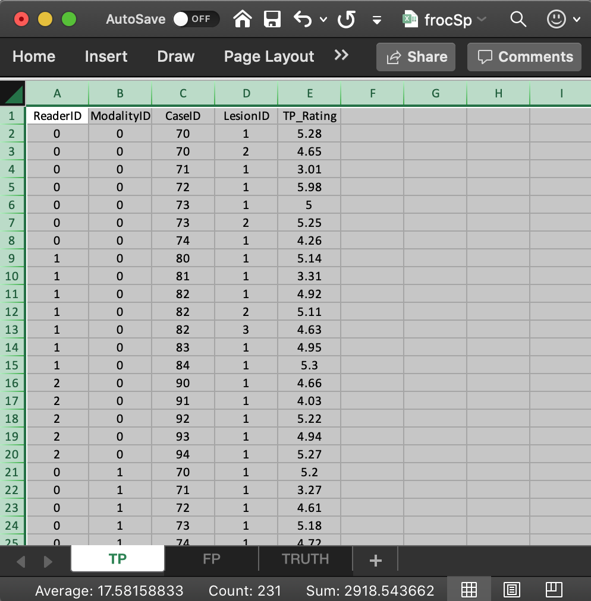

Chapter 5 FROC ROC DATA FORMAT SPLIT PLOT
5.1 Introduction
- The purpose of this vignette is to explain the data format of the input Excel file for an FROC split-plot dataset.
- In a split-plot dataset each reader interprets a sub-set of cases in all modalities.
- The cases interpreted by different readers have no overlap.
- It is assumed, for now, that each sub-set of cases has the same numbers of non-diseased and diseased cases.
5.2 The Excel data format
The Excel file has three worsheets named Truth, NL or FP and LL or TP.
5.3 The Truth worksheet
The Truth worksheet contains 6 columns: CaseID, LesionID, Weight, ReaderID, ModalityID and Paradigm.
- The first five columns contain as many rows as there are non-diseased cases (9) plus total number of lesions (27) in the dataset (each row with a non-zero
LesionIDcorresponds to a lesion). CaseID: unique integers, one per case, representing the cases in the dataset.LesionID: integers 0, 1, 2, etc., with each 0 representing a non-diseased case, 1 representing the first lesion on a diseased case, 2 representing the second lesion on a diseased case, if present, and so on.- The three non-diseased cases interpreted by reader with
ReaderIDvalue0are labeled1,2,3, while the diseased cases interpreted by this reader are labeled70,71,72,73and74, withLesionIDvalues ranging from 1 to 3.
- The second reader, with
ReaderIDvalue1, interprets three non-diseased cases labeled4,5and6, each withLesionIDvalue0, and five diseased cases labeled80,81,82,83and84, withLesionIDvalues ranging from 1 to 3.
- The third reader, with
ReaderIDvalue2, interprets three non-diseased cases labeled7,8and9, each withLesionIDvalue0and five diseased cases labeled90,91,92,93and94, withLesionIDvalues ranging from 1 to 3.
Weight: floating point value adding upto unity for diseased cases as required for FROC data.ModalityID: a comma-separated listing of modalities, each represented by a unique integer. In the example shown below each cell has the value0, 1. Each cell has to be text formatted.Paradigm: In the example shown below, the contents areFROCandsplit-plot.

FIGURE 5.1: Two views of Truth worksheet for file frocSp.xlsx
5.4 The structure of the FROC split plot dataset
The example shown in Fig. 1 corresponds to Excel file inst/extdata/toyFiles/FROC/frocSp.xlsx in the project directory.
frocSp <- system.file("extdata", "toyFiles/FROC/frocSp.xlsx",
package = "RJafroc", mustWork = TRUE)
x <- DfReadDataFile(frocSp, newExcelFileFormat = TRUE)
str(x)
#> List of 12
#> $ NL : num [1:2, 1:3, 1:24, 1:3] 1.02 2.89 -Inf -Inf -Inf ...
#> $ LL : num [1:2, 1:3, 1:15, 1:3] 5.28 5.2 -Inf -Inf -Inf ...
#> $ lesionVector : int [1:15] 2 1 3 2 1 2 1 3 2 1 ...
#> $ lesionID : num [1:15, 1:3] 1 1 1 1 1 1 1 1 1 1 ...
#> $ lesionWeight : num [1:15, 1:3] 0.3 1 0.333 0.1 1 ...
#> $ dataType : chr "FROC"
#> $ modalityID : Named chr [1:2] "0" "1"
#> ..- attr(*, "names")= chr [1:2] "0" "1"
#> $ readerID : Named chr [1:3] "0" "1" "2"
#> ..- attr(*, "names")= chr [1:3] "0" "1" "2"
#> $ design : chr "SPLIT-PLOT"
#> $ normalCases : int [1:9] 1 2 3 4 5 6 7 8 9
#> $ abnormalCases: int [1:15] 70 71 72 73 74 80 81 82 83 84 ...
#> $ truthTableStr: num [1:2, 1:3, 1:24, 1:4] 1 1 NA NA NA NA 1 1 NA NA ...- Flag
newExcelFileFormatmust be set toTRUEfor split plot data. - The dataset object
xis alistvariable with 12 members. - Note that the
dataTypemember is FROC and thedesignmember is SPLIT-PLOT. - There are 15 diseased cases in the dataset (the number of 1’s in the
LesionIDcolumn of theTruthworksheet) and 9 non-diseased cases (the number of 0’s in theLesionIDcolumn). - The
x$lesionVectormember is a vector with 15 ones representing the 15 diseased cases in the dataset. - The
x$lesionIDmember is a 15 x 3 array labeling the lesions in the dataset. - The
x$lesionWeightmember is a 15 x 3 array.
x$lesionVector
#> [1] 2 1 3 2 1 2 1 3 2 1 2 1 3 2 1
x$lesionID
#> [,1] [,2] [,3]
#> [1,] 1 2 -Inf
#> [2,] 1 -Inf -Inf
#> [3,] 1 2 3
#> [4,] 1 2 -Inf
#> [5,] 1 -Inf -Inf
#> [6,] 1 2 -Inf
#> [7,] 1 -Inf -Inf
#> [8,] 1 2 3
#> [9,] 1 2 -Inf
#> [10,] 1 -Inf -Inf
#> [11,] 1 2 -Inf
#> [12,] 1 -Inf -Inf
#> [13,] 1 2 3
#> [14,] 1 2 -Inf
#> [15,] 1 -Inf -Inf
x$lesionWeight
#> [,1] [,2] [,3]
#> [1,] 0.3000000 0.7000000 -Inf
#> [2,] 1.0000000 -Inf -Inf
#> [3,] 0.3333333 0.3333333 0.3333333
#> [4,] 0.1000000 0.9000000 -Inf
#> [5,] 1.0000000 -Inf -Inf
#> [6,] 0.3000000 0.7000000 -Inf
#> [7,] 1.0000000 -Inf -Inf
#> [8,] 0.3333333 0.3333333 0.3333333
#> [9,] 0.1000000 0.9000000 -Inf
#> [10,] 1.0000000 -Inf -Inf
#> [11,] 0.3000000 0.7000000 -Inf
#> [12,] 1.0000000 -Inf -Inf
#> [13,] 0.3333333 0.3333333 0.3333333
#> [14,] 0.1000000 0.9000000 -Inf
#> [15,] 1.0000000 -Inf -Inf- The
x$truthTableStrmember is a2 x 3 x 24 x 4array, i.e., I x J x K x (maximum number of lesions per case plus 1). Theplus 1is needed to accommodate normal cases withlesionID= 0. - Each entry in this array is either
1, meaning the corresponding interpretation exists, orNA, meaning the corresponding interpretation does not exist. - For example,
x$truthTableStr[1,1,1,1]is 1. This means that an interpretation exists for the first treatment (modalityID= 0), first reader (readerID= 0) and first (normal) casecaseID= 1 andlesionID= 0. This example corresponds to row 2 in theTRUTHworksheet. x$truthTableStr[1,1,4,1]is NA, which means an interpretation does not exist for the first treatment, first reader and fourth (normal) case.- However,
x$truthTableStr[1,2,4,1]is 1, which means an interpretation does exist for the first treatment, second reader and fourth (normal) case. This example corresponds to row 5 in theTRUTHworksheet. - Likewise,
x$truthTableStr[1,1,10,3]is 1, which means an interpretation does exist for the first treatment, first reader, tenth (abnormal) case andlesionID= 2. This example corresponds to row 12 in theTRUTHworksheet. - As an aside, in the FROC paradigm an interpretation need not yield a mark-rating pair. An interpretation means the reader was “exposed to” and had the opportunity to mark the corresponding treatment-reader-case-lesion combination.
- The reader should confirm that the contents of
x$truthTableStrsummarizes the structure of the data in theTRUTHworksheet.
5.5 The false positive (FP) ratings
These are found in the FP or NL worksheet, see Fig. 2.

FIGURE 5.2: NL/FP worksheet, left, and LL/TP worksheet, right, for file frocSp.xlsx
- This worksheet has the ratings of non-diseased cases.
- The common vertical length is 30 in this example (2 modalities times 3 readers times 5 non-diseased cases per reader).
ReaderID: the reader labels: these must be from0,1or2, as declared in theTruthworksheet.ModalityID: the modality labels:0or1, as declared in theTruthworksheet.CaseID: the labels of non-diseased cases. EachCaseID,ModalityID,ReaderIDcombination must be consistent with that declared in theTruthworsheet.
FP_Rating: the floating point ratings of non-diseased cases. Each row of this worksheet yields a rating corresponding to the values ofReaderID,ModalityIDandCaseIDfor that row. EachCaseID,ModalityID,ReaderIDcombination must be consistent with that declared in theTruthworsheet.
x$NL[,1,1:9,1]
#> [,1] [,2] [,3] [,4] [,5] [,6] [,7] [,8] [,9]
#> [1,] 1.02 2.22 1.90 -Inf -Inf -Inf -Inf -Inf -Inf
#> [2,] 2.89 0.84 1.85 -Inf -Inf -Inf -Inf -Inf -Inf
x$NL[,2,1:9,1]
#> [,1] [,2] [,3] [,4] [,5] [,6] [,7] [,8] [,9]
#> [1,] -Inf -Inf -Inf 2.21 3.10 2.21 -Inf -Inf -Inf
#> [2,] -Inf -Inf -Inf 3.22 3.01 1.96 -Inf -Inf -Inf
x$NL[,3,1:9,1]
#> [,1] [,2] [,3] [,4] [,5] [,6] [,7] [,8] [,9]
#> [1,] -Inf -Inf -Inf -Inf -Inf -Inf 2.14 1.98 1.95
#> [2,] -Inf -Inf -Inf -Inf -Inf -Inf 2.24 4.01 1.65- The first line of the above code shows the ratings, in both modalities, of the first three non-diseased cases with
CaseIDs1,3,3(indexed 1, 2, 3 and appearing in the first three columns) interpreted by the first reader (ReaderID0). - The second line shows the ratings, in both modalities, of the next three non-diseased cases with
CaseIDs4,5,6(indexed 4, 5, 6and appearing in the next three columns) interpreted by the second reader (ReaderID1). - The third line shows the ratings, in both modalities, of the final three non-diseased cases with
CaseIDs7,8,9(indexed 7, 8, 9and appearing in the final three columns) interpreted by the third reader (ReaderID2). - Values such as
x$NL[,,16:30,1], which are there for compatibility with FROC data, are all filled with-Inf.
5.6 The true positive (TP) ratings
These are found in the TP or LL worksheet, see below.
- This worksheet has the ratings of diseased cases.
- The common vertical length is 30 in this example (2 modalities times 3 readers times 5 diseased cases per reader).
ReaderID: the reader labels: these must be from0,1or2, as declared in theTruthworksheet.ModalityID: the modality labels:0or1, as declared in theTruthworksheet.CaseID: the labels of diseased cases. EachCaseID,ModalityID,ReaderIDcombination must be consistent with that declared in theTruthworsheet.
TP_Rating: the floating point ratings of diseased cases. Each row of this worksheet yields a rating corresponding to the values ofReaderID,ModalityIDandCaseIDfor that row. EachCaseID,ModalityID,ReaderIDcombination must be consistent with that declared in theTruthworsheet.
x$LL[,1,1:15,1]
#> [,1] [,2] [,3] [,4] [,5] [,6] [,7] [,8] [,9] [,10] [,11] [,12] [,13] [,14]
#> [1,] 5.28 3.01 5.98 5.00 4.26 -Inf -Inf -Inf -Inf -Inf -Inf -Inf -Inf -Inf
#> [2,] 5.20 3.27 4.61 5.18 4.72 -Inf -Inf -Inf -Inf -Inf -Inf -Inf -Inf -Inf
#> [,15]
#> [1,] -Inf
#> [2,] -Inf
x$LL[,2,1:15,1]
#> [,1] [,2] [,3] [,4] [,5] [,6] [,7] [,8] [,9] [,10] [,11] [,12] [,13] [,14]
#> [1,] -Inf -Inf -Inf -Inf -Inf 5.14 3.31 4.92 4.95 5.30 -Inf -Inf -Inf -Inf
#> [2,] -Inf -Inf -Inf -Inf -Inf 4.77 3.19 5.20 5.39 5.01 -Inf -Inf -Inf -Inf
#> [,15]
#> [1,] -Inf
#> [2,] -Inf
x$LL[,3,1:15,1]
#> [,1] [,2] [,3] [,4] [,5] [,6] [,7] [,8] [,9] [,10] [,11] [,12] [,13] [,14]
#> [1,] -Inf -Inf -Inf -Inf -Inf -Inf -Inf -Inf -Inf -Inf 4.66 4.03 5.22 4.94
#> [2,] -Inf -Inf -Inf -Inf -Inf -Inf -Inf -Inf -Inf -Inf 4.87 1.94 -Inf -Inf
#> [,15]
#> [1,] 5.27
#> [2,] 4.78- The first line of code shows the ratings, in both modalities, of the first five diseased cases with
CaseIDs70,71,72,73,74(indexed 1, 2, 3, 4, 5 and appearing in the first five columns) interpreted by the first reader (ReaderID0). - The second line shows the ratings, in both modalities, of the next five diseased cases with
CaseIDs80,81,82,83,84(indexed 6, 7, 8, 9, 10 and appearing in the next five columns) interpreted by the second reader (ReaderID1). - The third line shows the ratings, in both modalities, of the final five non-diseased cases with
CaseIDs90,91,92,93,94(indexed 11, 12, 13, 14, 15 and appearing in the final five columns) interpreted by the third reader (ReaderID2).
5.7 Summary
- TBA